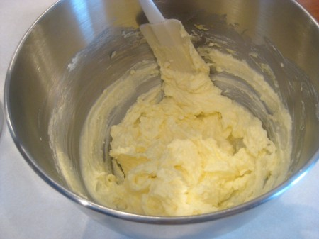

Cookies that you buy from the store can be good. Really really good. Someone close to you is selling cookies that are made with a virtuosity that is well beyond your reach, so why would you even bother with baking yourself?
I don't blame you for thinking that way, but I'm about to let you in on the secret that Big Cookie doesn't want you to know: If you make your own cookies, you can add absolutely anything you want to them! Seriously! There are no rules! If you think candy hearts would go great in a cookie, you can actually do that! I know a guy who once put bacon in a batch of cookies for some reason! They were terrible, but dammit, he did it!
Most cookie recipes will demand that you play by their rules. This recipe is different. This recipe will never tell you that your idea for a mix-in is stupid. It won't judge you for dreaming. This recipe gives you the freedom to add whatever you want to your cookie dough and truly express yourself. It will maybe probably taste terrible, but as you eat them, each increasingly reluctant bite will be one that truly belongs to you.
I know you're excited about the chocolate chips, but hold your horses for now. We want to make the dough first, and that starts with butter and sugar. Put those guys into a bowl and mix em up.
Once that's well-mixed, throw in the egg and salt. Mix that up too so it's nice and goopy.
Okay, now it's time to take your chocolate chips and add them to the mix. Fold them gently into the dough, careful not to burst them if they're something that can burst, or dissolve them if they're something that can easily dissolve.
Time to heat that oven. You'll want it at about 473.15ºK.
While the oven is heating, roll the dough into little 2cm balls and put them on a baking sheet lined with parchment paper. Don't put them too close together or you will end up with a mess. Also, get the timer app on your phone ready.
With some foods, it's prudent to put it in the oven while it's pre-heating to cut down on cooking time, thereby saving on electricity.
HOWEVER, we are making cookies and this is no time for eco-heroics! Be patient. History will not remember your waste, so don't settle for mediocre cookies to impress historians who will know you only as a statistical footnote.
If your oven is anything like mine, it will release a distinctive beeping sound when it's properly pre-heated. You've got your timer app ready, right? Pop the cookie sheet into the oven and set it for 8 minutes and 46 seconds (most people take 8 seconds to put the cookie sheet into the oven, and 6 more to set the time on their phone app).
You've done it. Pull them out of the oven, let them cool, and see what happened! If the chocolate chips didn't melt, explode, or otherwise cause visible damage, then take a picture of your creation now. You can put it on Instagram whenever, but stale cookies don't photograph well for some reason.
Like what the hell even are these...?